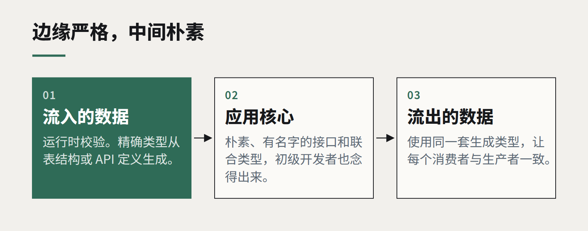

洞察
技术栈
处处 TypeScript，以及它在哪里不再划算
全栈类型化是这十年软件行业最划算的交易之一。但到了某个点，类型系统本身变成了产品，而真正的产品开始受损。

TypeScript 对 Web 软件日常开发的改变之大，怎么说都不为过。在我们的项目里，从数据库层、API 到界面共享同一套类型，能在一整类 bug 出现之前就把它们挡住。过去要提心吊胆一周的重构，现在一个下午完成。新同事顺着类型就能摸清代码库，而不必四处问人。
所以这不是一篇反对 TypeScript 的文章，而是在讨论它的回报在哪里趋于平缓——因为我们越来越多地看到团队在曲线的那一段花了真金白银。
它在哪里划算
- 在边界上。 类型最有价值的用途，是描述跨越边界的数据：API 请求与响应、数据库行、队列消息、配置。从单一源头——表结构、API 定义——生成这些类型，编译器就能检查系统的每个部分是否达成一致。
- 在共享的领域代码里。 把金额、日期、标识符和状态建模为不同的类型，就不会在需要订单 ID 的地方传进客户 ID。这类 bug 令人尴尬、频繁出现，而且测试看不见。
- 在变更时。 类型是一张“哪里会坏”的地图。代码库越大、越老，这张地图越值钱。

它在哪里不再划算
当类型系统被要求证明业务并不需要证明的东西时，回报就开始下降。
我们经常接手这样的代码库：泛型工具类型长达好几屏；条件类型让编译器要花好几秒才能解析；组件的 props 抽象到没人能读懂它们产生的报错。每一块单看都很巧妙，合在一起却让代码比它替代的纯 JavaScript 更难改——这恰恰违背了初衷。
我们会留意这些信号：
- 类型定义比它描述的代码还长。
- 报错信息需要资深开发者来解读。
- 编辑器和构建速度慢到不再有“即时”的感觉。
- 代码里到处是
as断言和any，用来逃避没人能满足的类型。
一个务实的中间地带
我们的工作原则是：边缘严格，中间朴素。来自外部的数据在运行时校验，并赋予精确类型。应用内部则偏好简单、有名字、平淡的类型——初级开发者也能念出来的接口和联合类型。高级类型特性留给被很多人使用的库代码，很少用在只有几个人修改的应用代码里。
还要记住：类型检查的是一致性，不是正确性。一个类型完美的函数，照样可以把 GST 算错。测试、边界校验和清晰的领域模型，做的是任何类型系统都做不了的工作。
TypeScript 最好的状态，是几乎隐形：安静地捕捉错误，从不为了自己而索取注意力。
继续阅读
全部洞察